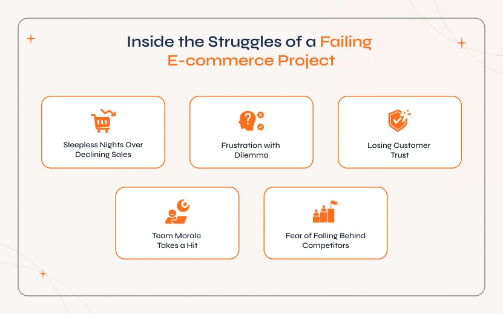

You have invested weeks and months of effort, a maze of meetings, precious time, and a solid budget into the e-commerce website. Yet, it might not have performed the way it should. The web pages might load slowly, performance is lagging behind, and managing backend operations will feel like literal chaos.
If this sounds familiar, then you’re not alone. For many business owners, CTOs, and project managers, this frustration really hits hard. The project, which is used to drive growth, is now stuck in an endless loop of errors and brings disappointment.
After all, struggling with an e-commerce project isn’t the end. It is actually a warning light that needs deeper attention, and that’s where “E-commerce website project recovery” sets its foot. E-commerce website project recovery is all about regaining control over, pinpointing what went wrong, and rebuilding the project with clarity and precision.
What is Project Recovery?
Project recovery is all about fixing a broken website or software that is failing. Beyond fixing, it also meant addressing the cracks that led to the failure in the first place, to avoid future flaws. If an e-commerce project starts failing, it often indicates several symptoms, like missed deadlines, poor communication, or constant rework that drains time.
The e-commerce website project recovery begins when the issues are no longer ignored. It is actually a structured algorithm for assessing what actually went wrong, whether the tech is outdated, or mismatched goals. Then, after careful consideration, the project recovery realigns the project with its sole purpose.
Why Create an E-commerce Website?
In today’s digital landscape, building an e-commerce website is more than just owning an online store. It’s more like the centre of your business evolution. It allows various brands to connect with your customers directly and expand beyond physical boundaries. A robust online presence helps build credibility, customer relationships and offer new opportunities to reach global markets.
From sales to customer trust, when the website doesn’t function as usual, it can slow everything down. This is where project recovery plays a vital role, helping an underperforming platform into a powerful one.
Inside the Struggles of a Failing E-commerce Project
When an online store starts slipping, the entire business will feel the impact. More than just a loss of sales, it affects the confidence, momentum and peace of mind. Here’s what reality feels like if the online market starts to fail.

Sleepless Nights Over Declining Sales
The project managers
will keep on checking the dashboards and reports, hoping the numbers will go up. But
it doesn't. The traffic might look fine, yet the orders keep falling, creating chaos
among teams. For a project manager, every hour feels like a missed opportunity, and
the worst part is not knowing exactly why it’s occurring.
Frustration with Dilemma
Meetings might collide, but
solutions won’t. In a team, everyone has their own theory. The marketing team blames
the traffic, the tech blames the design, and the designers blame the vision. Now,
you’ll get caught in the middle and try to find a solution while money and time
keeps slipping away.
Losing Customer Trust
Each and every checkout error,
glitched page, or delayed order will consume your brand’s reputation. Past customers
who once trusted your business morale will doubt your loyalty. Moreover, each and
every complaint or refund becomes a little reminder of how fragile the trust really
is.
Team Morale Takes a Hit
When the result doesn’t show up,
the motivation will eventually fade. Teams that are once used to hitting with
innovative ideas try to get by. The positive energy that kept everyone on track has
gone, replaced with frustration and pushes to work under pressure.
Fear of Falling Behind Competitors
While teams are trying to fix broken e-commerce stores, the
competitors move ahead, improving their websites, running new campaigns, and winning
the hearts of audiences. Seeing competitors grow while you’re still stuck in
recovery mode will feel like chasing a target which is on the move. No matter how
hard you try, the goals keep slipping out of your hands.
Main E-commerce Website Requirements Checklist
The foundation matters most to recover a failed e-commerce website. Here’s the recommended checklist that your e-commerce website must include to run effectively.

Product Catalog Management
Your catalog should look simple,
organized and yet easy to update for quick browsing. Ensure the images are clear
with accurate descriptions, pricing, and real-time stock visibility. This helps the
customers make quick decisions and minimize confusion for your sales team.
Secure Payment Gateway
A reliable payment system builds
instant trust among users in a short time. Giving multiple payment options like
credit cards, digital wallets, UPIs, and QR code payments, ensuring data encryption
and PCI compliance at the same time, protects both your customers and business from
digital theft.
User Account & Login Systems
For targeted users, a smooth
sign-up procedure and reliable login experience results in constant purchases. With
your system, customers should be able to track orders, view purchase history, and
manage preferences accordingly.
Shopping Cart & Checkout
The checkout process should feel
frictionless. Minimal clicks, transparent pricing, and guest checkout options will
reduce abandonment rates and turn browsers into potential buyers.
Order & Inventory Management
A strong backend helps your
team manage every nook and cranny smoothly and keeps stay in control. Inventory
updates, order notifications, and automated fulfilment in real-time help avoid late
deliveries.
Mobile-Friendly Design
In recent days, most of the online
traffic comes from mobile devices, as the majority of customers depend on them. So,
your website should load quickly, display clearly for smaller screens, and must
offer a buying journey for all types of customers.
Analytics & Reporting Tools
Smart
implementation will turn guesswork into strategy. Analytics integration will let you
know what’s working. This includes sales trends, conversion rates, and user
behaviour. In this way, you can make informed decisions and scale confidently.
Laying the Groundwork for a Successful E-commerce Launch
Establishing a successful e-commerce website isn’t just about coding and designing, and assembling. More than that, it’s about aligning modern technology with business goals. A well-planned project will result in high performance, scale smoothly, and gain profit. Before web development, here are the key aspects that a businessperson should keep in mind.
Define Business Objectives
Start the project with what you
actually need to pull off (more sales, wider reach, or better customer retention).
Transparent goals will help shape each and every decision, from platform choice to
marketing strategy.
Acknowledge Target Audience
Have a keen understanding on
who you are selling the product to. Do analyze the customer behaviour, preference,
and pain points to create a seamless buying experience that actually feels natural
and relevant to your audience.
Define Budget Boundaries
Do not rush or skip the natural
algorithm involved in the process. Set aside the budget not only for building the
website, but also for marketing, upkeep, and also future improvements. A crisp and
clear timeline helps businesses to stay organized and eradicate further issues.
Choose Smart Collaborations
Instead of selecting the
popular one, pick the right platform that actually fits your business model. Beyond
implementing the immediate requirements, the right technological partner will
understand your long-term vision and assist you accordingly.
Think Beyond Launch
While you start
building your e-commerce website, think beyond launch day. Your website shouldn’t
just work for a limited day. It should be ready to grow alongside your business.
Building an e-commerce website keeping scalability in mind will save significant
time, money, and effort.
Reviving E-commerce Project as a Hybrid Business Analyst
When an e-commerce project starts to fall apart, a hybrid business analyst plays a vital role in bringing it back on track. They are the one who bridges the gap between strategy and execution and helps in modern web and software development. If you’re naive enough to rescue a failing e-commerce project, then here are a few ways to steer the recovery.

Begin with Evaluation
Before suggesting a viable solution
among teams, you must study the problem closely. Ensure you review the project
documentation, past sprint reports, user feedback, and analytics data. This will
help you to identify the real gaps easily.
Rebuild Team Alignment
A failing project often struggles a
lot because people stop working together as a team. Everyone focuses on their own
part instead of marching forward to achieve the same goal. Regular syncs,
transparent updates, and clear tracking will restore trust and will get everyone
moving in the same direction.
Bridge Pain Solutions
Don’t divert your concentration and
listen carefully to what the decision-makers are saying. Further, convert those
concerns into structured and testable requirements. This ensures the developers
build what the business actually needs instead of what they assume it is.
Prioritize Quick Wins
While fixing the project, don’t try
everything at once. Start by identifying small to high-impact improvements,
including checkout flow, website speed, or backend automation, which can show
visible progress quickly. Early success rates build confidence among stakeholders
and do keep morale up.
Measure, Report & Iterate
After
initiating the recovery steps, track the outcomes closely. Further, do share
transparent reports that connect technical progress directly to measurable business
outcomes. Moreover, keep on refining the system instead of treating the recovery
process one-time fix.
Choosing the Right Partner for E-Commerce Project Recovery
If you’re on the verge of dropping your e-commerce website, just try to hold on a little longer. Picking up the right e-commerce project rescue services can get your website back on track. Choosing the right partner is all about finding a perfect team that understands your business needs, current market, and long-term goals. A right company should be able to convert complex solutions into smooth and scalable solutions.
This is where Sparkout truly stands out. With extensive experience in B2B web development, our unique approach combines technical precision with real-world business insights. Beyond fixing issues and building features, we at Sparkout help businesses regain control, enhance performance, and create a standard value from your e-commerce investments.
How Sparkout Helps Clients Overcome These Challenges?
At Sparkout, our actual goal is beyond repairing what’s broken. It is to help businesses regain clarity, stability, and control over their e-commerce journey. We align our rescue strategies with modern web development trends to ensure your website isn’t just functional but future-ready. Here’s how we help our clients overcome a failing e-commerce website.

Comprehensive Project Evaluation
From business goals to
backend workflows, we start the rescue process by evaluating the full picture. Our
dedicated team at Sparkout proceeds with e-commerce platform restoration and reviews pain
points, and integrations to understand the actual reason behind the failure.
Strategic Business Alignment
Every technical move that we
make will support your business objectives. From improving customer experience and
boosting sales to reducing downtime, we ensure that each and every tech decision
will serve a larger vision for businesses.
Transparent Collaboration
We actually believe that recovery
works only when everyone is aligned. This is why we keep clients in the loop with
clear communication and actionable insights that show exactly how the project is
moving forward.
Performance Reengineering
Our technical experts will
rebuild systems, keeping performance and scalability in mind. We optimize workflows,
enhance stability, and fix technical debt so that your platform can handle the
growth without disruptions.
Continuous Support & Optimization
Our
recovery algorithm doesn’t just end after the launch. Our team at Sparkout provides
long-term support, regular checks, and optimization strategies to ensure that the
website stays secure, efficient, and ready for future changes.
Why Choose Sparkout for E-commerce Website Project Recovery?
Choosing Sparkout means partnering with a team that understands the business and technical sides of e-commerce recovery. Here are some core aspects which set us apart.
Proven Recovery Expertise
Being one of the leading
restructuring consultancies offering website recovery services, we helped multiple
brands like TravelHero, Park, and FirstTrackit to bounce back from underperforming
projects.
Tailored Solutions
Each and every business is unique, and
so are the challenges. We customize our recovery approach based on your goals and
target audience to make sure the solution fits exactly.
Business-Driven Result
Our focus is always on measurable
outputs like smoother operations, improved sales and better user retention. Each and
every milestone that we deliver ties directly to your business impact.
Long-Term Partnership
We don’t
actually walk away after the system deployment. Sparkout stays in touch with you,
monitors the growth and ensures the e-commerce platform evolves with your business.
Wrapping Things Up
Rescuing an e-commerce project is hard, yet it includes diverse processes for a complete recovery. When an online store keeps slipping, it often takes more than one patch to make things right. It includes clear website relaunch strategy, sharp decisions, and advanced frameworks to eradicate the issue quickly.
Project recovery means taking lessons from what we went wrong and using strategies to build something that actually works. Whether you’re regaining control after setbacks or ready to reshape your online store, Sparkout helps you in all possible ways. With our dedicated e-commerce website maintenance services, we are turning challenges into long-term success.